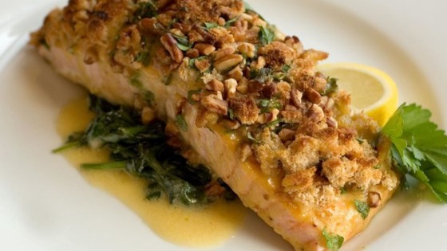

Baked Salmon w/ Toasted Almond Parsley Salad

Want that perfect baked yet juicy salmon? Enjoy the dishes of the sea in a healthy and tasty way! This dish is simple and easy to cook not to mention cook time is about 15 minutes. Switch up the diet in the right way!
Required Ingredients:
12 ounce salmon fillet, cut into 4 pieces
Coarse-grained salt
Freshly ground black pepper
Toasted Almond Parsley Salsa, for serving
Baked squash, for serving, optional
Toasted Almond Parsley Salad Preparation:
1 shallot
1 tablespoons red wine vinegar
Coarse grain salt
2 tablespoons capers, rinsed
1 cup fresh flat-leaf parsley
1/2 cup toasted almonds
Extra-virgin olive oil